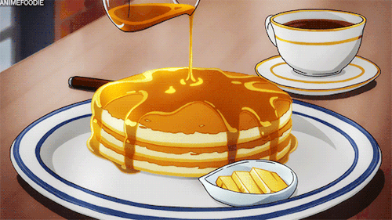

Good Old Fashioned Pancakes
Description:
Simple Pancake recipe
Ingredients
- 1 ½ cups all-purpose flour
- 3 ½ teaspoons baking powder
- 1 teaspoon salt
- 1 tablespoon white sugar
- 1 ¼ cups milk
- 1 egg
- 3 tablespoons butter, melted
Steps:
- In a large bowl, sift together the flour, baking powder, salt and sugar.
Make a well in the center and pour in the milk, egg and melted butter;
mix until smooth.
- Heat a lightly oiled griddle or frying pan over medium-high heat.
Pour or scoop the batter onto the griddle, using approximately 1/4 cup for each pancake.
Brown on both sides and serve hot.

Nutrition Facts
Per serving:
158 calories; protein 4.5g; carbohydrates 21.7g; fat 5.9g; cholesterol 37.7mg; sodium 503.6mg.
Back to Homepage